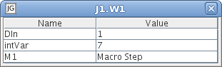

Workspaces are windows within the workspace area of the editor. The window title of a workspace is its global reference name. Top-level workspaces have the name prefixed by "Top:".
Workspaces have an associated level number. Workspaces with a high level number are always shown on top of workspaces with a lower level number. When a workspace receives focus it is shown on top of all workspaces with the same or lower level number. The level of a top-level workspace is 1. The level a subworkspaces is the level of its parent workspace + 1.
By default each workspace has a grid and objets that are created or moved will automatically snap to the grid. Connectable objects are snapped so that their connection stub is horizontally aligned with the grid.
It is possible to lock all workspaces of an application. A locked workspace cannot
be resized and it is not possible to move, delete, or create objects, make connections etc.
However, it is still possible to access object-specific menus and it is still
possible to execute the application. A locked workspace is indicated by a
lock icon  .
Locked workspace can for example be used to
.
Locked workspace can for example be used to
A workspace that is executing is indicated by an arrow icon
 .
The arrow icon overrides the lock icon.
.
The arrow icon overrides the lock icon.
Hold the shift key while scrolling with the mouse to scroll horizontally. The scrollbars of a workspace may be removed.
The inspector is a window that can be opened for hierarchical objects, i.e. objects containing a workspace. The window contains a table with all analog and digital inputs and outputs, hierarchical objects, and ordinary variables found on the workspace. The values in the table are automatically updated. Double-click on the value of a variable to edit it. This is, however, not possible if the application is locked. Double-click on a hierarchical object to make the inspector show this object instead.
